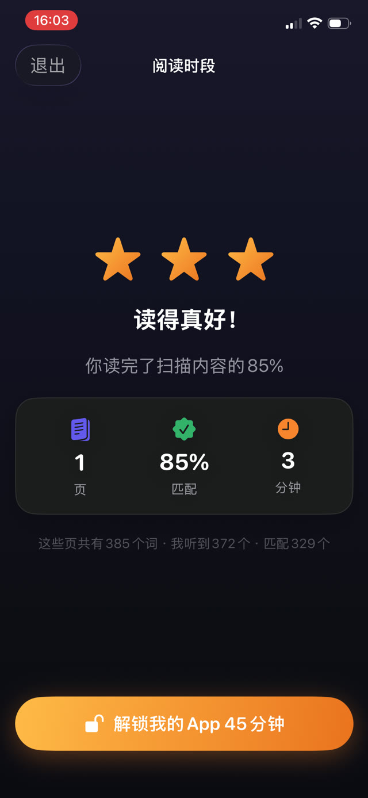

所有相关的人都知道这件事在发生。值得弄清楚这份记录到底是为了什么，因为答案决定了它值得花多少力气。


老师真正在看的是什么
多半不是书名。阅读记录是一个问题的替代品：这个孩子在家有没有规律地阅读？三十个学生配一位老师，直接观察不可能，于是记录顶了这个位置。
这意味着有用的信号是频率和持续，而不是文学价值。分散在十二个晚上、每次二十分钟，能告诉老师的东西远多于周六的四个小时。
纸质记录为什么会滑向虚构
- 它是事后写的，而人对上周二读了什么的记忆几乎没有价值。
- 它依赖家长恰好在阅读发生的那一刻在场且有空。
- 它由被评估的人自己填报，这在任何测量体系里都是问题。
- 它记录意图和记录事实一样容易，而事后没有人分得清。
一份诚实的记录包含什么
如果你要写，就让它记下那些无法凭记忆复原的东西：
- 每一次的日期和时刻，而不只是哪一天。
- 它实际持续了多久，而不是原本打算持续多久。
- 读了什么：哪本书，最好还有哪一段。
- 阅读确实发生过的证据，而不是你自己画的一个勾。
把记录自动化
最可靠的记录是没有人需要记着去填的那种。如果记录是阅读本身的副产品，它就不会漂移，不能事后补，也不依赖周日晚上的诚实。
这也免去了记录夸大带来的尴尬。信任这份记录的老师可以据此行动；怀疑它只是装饰的老师会忽略它，那这份功夫就白费了。
导出给老师的 PDF
Guardian Reader 会自动保存每一次朗读：日期和时刻、页数、分钟数、匹配度，以及孩子真正朗读出来的文字。
Premium 可以在「进度」标签里把这些全部导出成 PDF，可直接发邮件或打印。它是在家练习的真实记录，来自经过核验的朗读，而不是最后一刻回忆出来的东西。
由核验过的朗读构成的记录
因为每一次朗读都在进行时就与扫描的书页核对过，这份记录不是关于阅读的说法，而是阅读的副产品。正是这个区别，让这份导出值得交到学校手上。